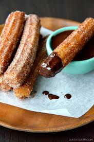

Churros

Churro, a fritter of Spanish origin made of flour-based batter that is piped into extremely hot fat and fried,
then rolled in cinnamon-laced sugar, resulting in a treat that is sweet and crispy on the outside but fluffy on the inside.
Ingredients
- Water
- Sugar
- Salt
- Oil
- Flour
- Cinnamon
Steps
- Boil water, sugar, salt, and vegetable oil. Remove from the heat, then stir in flour.
- Transfer the dough to a pastry bag and pipe into strips.
- Fry the strips in hot oil until they're golden.
- Drain the churros, then roll in cinnamon-sugar.